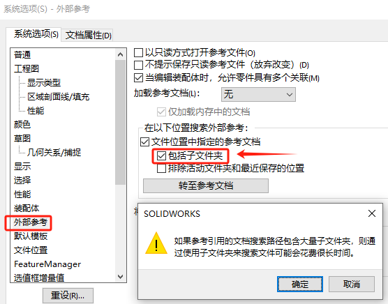

参考文件的读取顺序
当打开参考文档时，SOLIDWORKS 进行搜索以找出文件。 例如，此搜索可能在您打开工程图而被参考的装配体找不到时发生，或者当您还原装配体中压缩零部件而零部件找不到时发生。
SolidWorks按照以下顺序搜索被引用文件:
1)读取内存
如果一个具有与装配体同名的文件已经在内存中打开，SolidWorks将直接使用这个文件。例如： p2.sldprt 在其他打开的文件中，SOLIDWORKS 将使用此版本的 p2.sldprt。
2)参考文件夹
搜索在 文件位置选项对话框的参考文档文件夹列表中指定的路径。
D:\aa\bb\p2.sldprt
E:\cc\dd\p2.sldprt
默认参考文件夹是在设置的位置下的同名零件查找，如果需要进到子文件夹，则需勾选如下选项。注意，如果参考引用的文档搜索路径包含大量子文件夹，则通过使用子文件夹来搜索文件可能会花费很长时间
按【工具】/【选项】/【系统选项】/【文件位置】中指定的参考文件路径–添加一个让SolidWorks优先搜索的目录列表，这些路径通常是保存项目的工作服务器上的网络共享位
3)最近一次打开文件时的路径
打开父文件时，SolidWorks将在同一路径下搜索参考文
4)系统最近打开文件的路径
适用于系统曾在某路径下打开过参考文件的情况。
5)父文件最后保存时参考文件所在的路径
如果父文件被移动，将使用当前的磁盘盘符(如E:)来取代其在最后保存时的盘符(如C:、D:等)
6)父文件最后保存时参考文件的原始磁盘路径
指保存在父文件中的绝对路径。
7)手动浏览到文件
如果仍没有找到参考文件，SolidWorks将要求用户指定–当SolidWorks按上述6种方式没有找到参考文件时，则会要求用户指定路径。